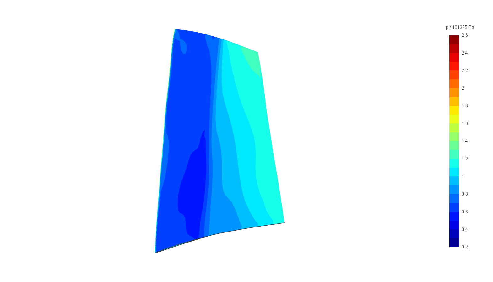
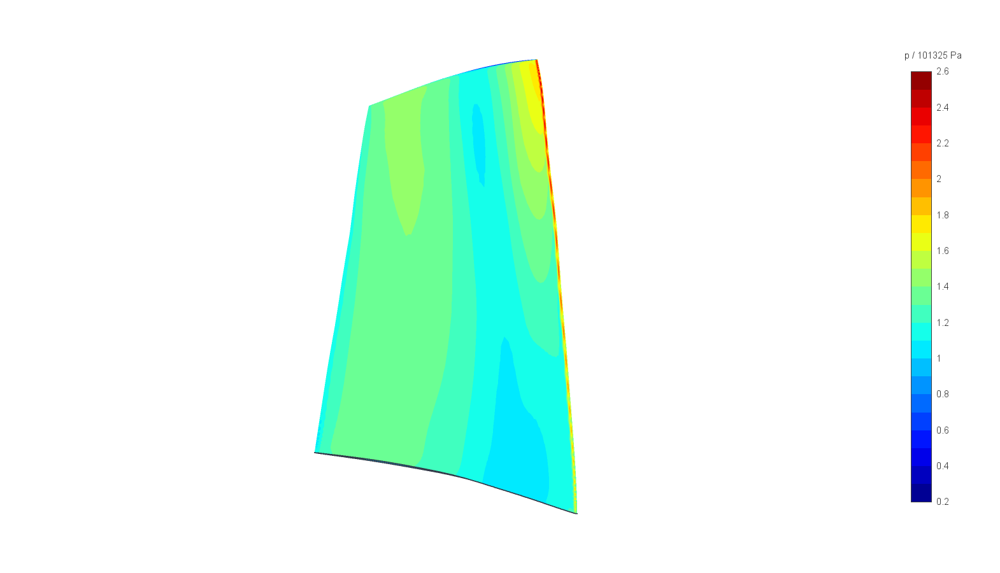
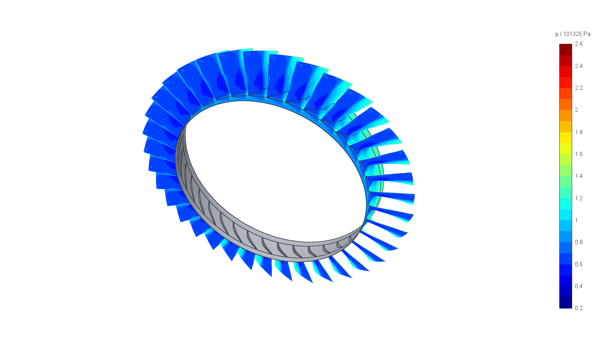
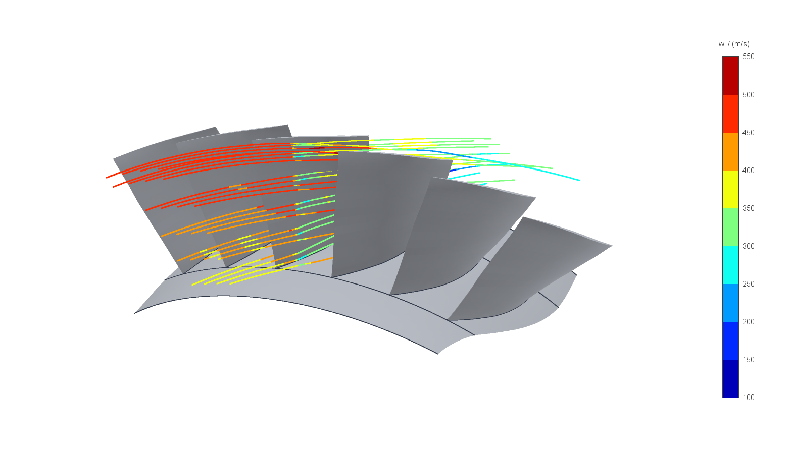
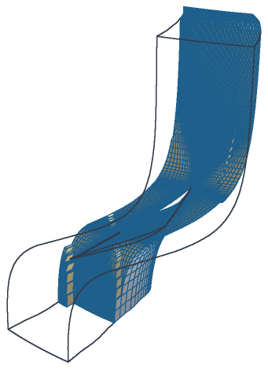
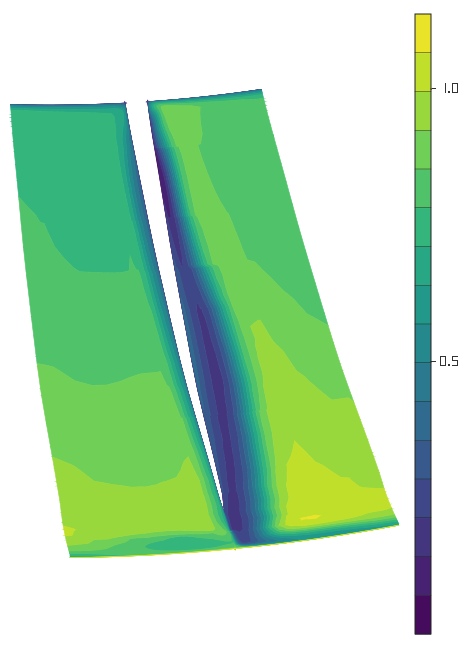

NASA Rotor 37, Spalart-Allmaras, feines Netz
Transsonischer Verdichterrotor (36 Schaufeln, 17188,7 1/min) zäh mit Spalart-Allmaras bis an die Wand: eine Teilung mit Spalt 0,356 mm, 480 768 Zellen, y+ um 1, Gegendruck 120 kPa. Mit dem Weg zur konvergierten Rechnung, Bildern der Schaufel, Filmen des drehenden Kranzes und Stromfäden.
Steckbrief
| Angabe | Wert |
|---|---|
| Modell | Navier-Stokes, turbulent (Spalart-Allmaras) |
| Netz | 480.768 Zellen |
| Zeitverfahren | Newton-Krylov (implizit) |
| Ergebnis der Rechnung | konvergiert nach 663 Schritten, relatives Residuum 9,9·10−9 |
Was der Fall zeigt
Zweck
Rotor 37 ist ein transsonischer Verdichterrotor mit 36 Schaufeln, der bei Auslegungsdrehzahl (17 188,7 1/min) rund 20 kg/s Luft auf ein Totaldruckverhältnis von etwa 2 verdichtet. An der Schaufelspitze strömt die Luft mit rund Mach 1,4 relativ zur Schaufel an. Vor der Passage steht ein Stoß, der an der Saugseite auf die Grenzschicht trifft, und durch den Spalt über der Spitze strömt Luft von der Druck- zur Saugseite. Der Fall prüft das Zusammenspiel von Turbulenzmodell, wandnaher Auflösung, Stoß und Spaltströmung im drehenden System. Er ist der aufwendigste Fall der Sammlung und der, an dem am meisten gearbeitet wurde.
Diese Seite beschreibt deshalb nicht nur das Ergebnis, sondern auch den Weg dorthin: welche Schwierigkeiten auftraten, was dagegen gebaut wurde und was jede Änderung bewirkt hat. Die reibungsfreie Rechnung desselben Rotors mit ihrer Kennlinie steht auf der Seite Rotor 37, Euler.
Rechenweg
Gerechnet wird eine Schaufelteilung (10°) mit rotationsperiodischen Rändern im drehenden System. Das Netz erzeugt der Passagengenerator aus der MERIDL-Datei der Geometrie: 480768 Zellen, Hexaeder mit wenigen Prismen an Vorder- und Hinterkante, die erste Zelle an Schaufel, Nabe, Gehäuse und Spitze 2 bis 4 µm hoch, damit y+ um 1 liegt. Im Spalt von 0,356 mm über der Spitze liegen 20 Zelllagen über die Weite und acht Streifen über die Schaufeldicke. Die Nichtorthogonalität der Flächen bleibt unter 70°.
Turbulenzmodell ist Spalart-Allmaras ohne Wandfunktion, voll gekoppelt mit der Strömung. Der Fluss ist HLLC in zweiter Ordnung mit Venkatakrishnan-Begrenzer, die Zeitintegration Newton-Krylov. Drei Schalter gehören fest zum Fall, weil die Rechnung ohne sie nicht konvergiert:
-kopplungab:1e30koppelt die Turbulenzgröße vom ersten Schritt an in das Newton-System (siehe Kopplung).-turbulenzskala:zellebezieht die Turbulenzgröße in GMRES je Zelle auf ihren eigenen Wert statt auf den größten des Felds.-gradientverstaerkung:schwellenimmt Green-Gauss statt der kleinsten Quadrate in den Zellen, in denen die kleinsten Quadrate einen Flächenwert außerhalb der Nachbarwerte ergeben würden (siehe Gradienten).
Gestartet wird aus der Zuströmung bei einem statischen Gegendruck von 120 kPa an der Nabe des Austritts. Die Rechnung ist nach 663 Newton-Schritten auf 9,9·10−9 des Bezugs gefallen, in rund 2,7 Stunden auf vier Kernen. Am Austritt fließen je Teilung 0,56694 kg/s gegen 0,56694 kg/s am Eintritt (0,999999).
Ergebnis gegen die Messung
Die Kennwerte sind über die Ebenen der Messung gemittelt (R53, R123): Druckverhältnis und Temperaturverhältnis der Totalgrößen und der isentrope Wirkungsgrad. „Gemessen“ ist die Messung beim selben Massenstrom, zwischen den Messpunkten linear. Die Punkte bei 112, 116 und 123 kPa sind aus dem Ergebnis bei 120 kPa neu gestartet.
| Gegendruck in kPa | Massenstrom in kg/s | Druckverhältnis | gemessen | Temperaturverhältnis | gemessen | Wirkungsgrad | gemessen |
|---|---|---|---|---|---|---|---|
| 112 | 20,65 | 1,800 | 2,066 | 1,220 | 1,260 | 0,831 | 0,886 |
| 116 | 20,62 | 1,857 | 2,067 | 1,231 | 1,261 | 0,836 | 0,884 |
| 120 | 20,43 | 1,918 | 2,089 | 1,245 | 1,267 | 0,835 | 0,877 |
| 123 | 19,55 | 1,961 | 2,139 | 1,259 | 1,284 | 0,819 | 0,854 |
Das Druckverhältnis liegt an allen Punkten 8 bis 13 % unter der Messung, das Temperaturverhältnis 1,8 bis 3,2 %, der Wirkungsgrad 0,035 bis 0,055. Der Rotor leistet also zu wenig Arbeit, nicht nur mit zu großem Verlust. Mit steigendem Gegendruck wird der Fehlbetrag im Druckverhältnis kleiner, verschwindet aber nicht. Der Punkt bei 123 kPa liegt dicht an der Pumpgrenze der Messung (19,39 kg/s); sein Residuum blieb nach 600 Schritten bei rund 0,25 des Bezugs stehen, seine Werte sind deshalb nur ein Anhalt.
Eine Zeit lang schien die Rückrechnung des Abströmwinkels (Minderumlenkung) den Fehlbetrag zu erklären: auf dem groben Netz blieb die Rechnung im Mittel über die Höhe 3,1° hinter dem Metallwinkel zurück, die Messung mit derselben Formel nur 0,1°. Das hat sich nicht gehalten. Mit dem richtigen Kanal hinter dem Rotor (Schritt 18) kehrt sich die Rückrechnung auf −2,3° um, während der Fehlbetrag im Druckverhältnis gleich bleibt – die Zahl hängt an Radien und Axialgeschwindigkeit in der Messebene, nicht an der Schaufel. Aussagekräftiger ist der unmittelbare Vergleich der Profile über die Höhe (Schritt 19): in der Mitte der Höhe fehlen Arbeit und Wirkungsgrad, an der Spitze ist der Verlust viel zu groß.
Der Weg zu diesem Fall
Die Tabelle fasst die Schritte vom 21. bis 25. November 2026 zusammen, in der Reihenfolge, in der sie gegangen wurden. Alle Änderungen am Löser sind Optionen; ohne den Schalter rechnet der Löser wie vorher. „Bezug“ ist das Residuum des ersten Schritts.
| Schritt | Befund oder Änderung | Wirkung |
|---|---|---|
| Grobes Netz: 90 304 Zellen, SST mit Wandfunktion, y+ um 75 | ||
| 1 | Ausgangslage. Die Wirbelviskosität der ersten Zelllage lag bei 0,3 bis 0,48 des Werts, den das Modell dort haben sollte: die Scherrate der Wandzelle kam aus dem Gradienten mit der Haftbedingung an der Wand und war mehrfach zu groß. | Newton bleibt nach 1500 Schritten bei 0,45 des Bezugs stehen; 20,48 kg/s, Druckverhältnis 1,913, Wirkungsgrad 0,836. |
| 2 | Scherrate der Wandzelle aus dem Wandgesetz, wie schon Produktion und ω der Wandzelle (Wand). | Konvergiert in 800 Schritten auf 9e-7. 20,64 kg/s, 1,905, 0,844; gemessen 2,066 und 0,886. Der Fehlbetrag bleibt. |
| 3 | Radial doppelt so fein. | 20,66 kg/s, 1,903, 0,844: das Profil am Austritt bleibt fast gleich. |
| 4 | 12 statt 4 Zelllagen im Spalt; zum Vergleich ganz ohne Spalt. | 20,71 kg/s, 1,902, 0,848; ohne Spalt 20,86 kg/s, 1,905, 0,852. Im Mittel erklärt der Spalt den Fehlbetrag nicht; er wirkt oberhalb von 85 % der Höhe, dort aber stark (Schritt 19). |
| 5 | Rückrechnung des relativen Abströmwinkels aus Arbeit und absolutem Winkel, für Messung und Rechnung mit derselben Formel. | Minderumlenkung der Rechnung 3,1°, der Messung 0,1°; die Korrelation nach Carter erwartet 4,6 bis 7,7°. Die Messung ist zwischen 30 und 90 % der Höhe sogar leicht überumlenkt. Mit Schritt 18 überholt: die Rückrechnung hängt an der Geometrie der Messebene. |
| 6 | Sperrgrenze (106 kPa) und Vergleich mit einer Rechnung der Literatur mit aufgelöster Wand (R97) beim selben Anteil am eigenen Sperrmassenstrom. | Sperrmassenstrom mindestens 20,77 kg/s (Messung 20,93). Gegen R97 bleiben 5,5 % im Druckverhältnis, 1,7 % im Temperaturverhältnis und 0,027 im Wirkungsgrad. Auch eine Rechnung mit aufgelöster Wand trifft die Messung also besser. |
| Feines Netz: 480 768 Zellen, ohne Wandfunktion, y+ um 1 | ||
| 7 | Netz für y+ um 1: Verdichtung im Spalt, Streifen im Band über der Spitze, auslaufende Verdichtung zu Ein- und Auslass, Winkelstreifen an den Kanten (Passage). | Das erste feine Netz hatte über der Spitze eine einzige Zelle über der Schaufeldicke (Volumenverhältnis 1002 zur Nachbarzelle) und Flächen bis 84° nichtorthogonal; danach Volumenverhältnis 5,2, höchstens 69,7°. |
| 8 | SST ohne Wandfunktion, gestartet aus einer reibungsfreien Rechnung erster Ordnung, 2000 Schritte. | Das Residuum fällt in 30 Schritten auf 0,15 und pendelt bis zum Ende zwischen 0,1 und 0,18. Die Massenbilanz ist um 1,2 % verletzt; die Kennwerte (20,69 kg/s, 1,868, 0,839) sind nicht belastbar. |
| 9 | Residuum je Zelle in der Ausgabe, mit Ort der größten Werte. | Die Hälfte des Rests sitzt in zwei Zellen an der Vorderkante nahe der Nabe, in der ersten Zelllage. Beim Gegenversuch ohne Naht zwischen drehender und stehender Nabe bleibt der Stillstand: er ist nicht örtlich. |
| 10 | Volle Kopplung der Turbulenz in Newton. Sie setzte erst ein, wenn das auf die Zuströmung bezogene Turbulenzresiduum unter 1 fiel; hier lag es bei 1e6 bis 1e7. | Die Kopplung lief still lose. Jetzt einstellbar und mit Warnung; dazu die Skalierung je Zelle, weil GMRES mit dem Feldbezug zusammenbrach. |
| 11 | SST voll gekoppelt. | Eine Klemme, die ω in einem Schritt höchstens auf ein Zehntel fallen lässt, gräbt in sechs Schritten ein Loch von 70 730 auf 0,7. Ab Schritt 8 löst GMRES nur noch auf 0,13 bis 0,78 genau. SST auf diesem Netz bleibt offen. |
| 12 | Gegenversuche zur laminaren Formulierung: ebene Platte mit der Wandauflösung des Rotors, gerade und geschert bis 60°, und der Rotor laminar bei einem Hundertstel der Reynoldszahl. | Die Platte konvergiert in 18 bis 34 Schritten, Wandreibung höchstens 1,6 % neben Blasius: die viskosen Flüsse sind auf diesen Zellen richtig. Der laminare Rotor bleibt bei 0,1 des Bezugs stehen, die CFL fällt auf 0,25. |
| 13 | Ursache gefunden: auf dünnen, schiefen Wandzellen verstärken die kleinsten Quadrate Unterschiede längs der Wand bis zum 309-fachen. Option: Green-Gauss in den Zellen, in denen die Verstärkung über 1 liegt. | Am Rotor 0 statt 8336 Zellen, deren Flächenwert über die Nachbarwerte hinausschießt. Laminar 1,8e-2 statt 1,05e-1 nach 300 Schritten, die CFL steigt bis 177. |
| 14 | Spalart-Allmaras ohne Wandfunktion mit den drei Schaltern, aus der Zuströmung. | Konvergiert in 663 Schritten auf 1e-8, Massenbilanz 0,04 %. 20,43 kg/s, 1,918, 0,835; gegen die Messung -8,2 % im Druckverhältnis, -1,8 % im Temperaturverhältnis, -0,042 im Wirkungsgrad. |
| Auswertung der konvergierten Rechnung | ||
| 15 | Versperrung hinter dem Rotor und Stoßlage nach Suder (R122), Versperrung. | Kern 9,1 % (Messung 8 bis 10 %), Wandzone 14,2 % (17 bis 18 %), Stoß bei 70 % Höhe bei 0,48 der axialen Sehne (35 bis 65 %). Die Rechnung versperrt nicht zu viel. |
| 16 | Kennwerte an den Radien der Sonden gemittelt wie in der Messung (R121), statt über den ganzen Querschnitt (Sonden). | Druckverhältnis +0,005, Wirkungsgrad +0,003 an einem Zwischenstand. Die Auswertung erklärt den Fehlbetrag nicht. |
| 17 | Gegendruck 112, 116 und 123 kPa aus dem Stand bei 120 kPa. Nach dem Wechsel senkte die Schrittweitensteuerung die CFL auf 1, und die Lösung stellte sich nicht um; neu: die CFL fällt nicht unter den Startwert, solange GMRES löst (Boden der CFL). | Die Punkte der Tabelle oben. Der Fehlbetrag wandert mit der Kennlinie und bleibt. |
| 18 | Kanal hinter der Geometriedatei: die Datei endet 7,3 cm hinter der Vorderkante, dahinter hielt der Generator die Radien fest. Nach der Kanaltafel des Prüfstands (R123) ist der Ring an der Messebene 10 % kleiner (Option -kontur:, Passage). | Auf dem groben Netz bei 120 kPa reißt die Strömung mit dem engeren Kanal ab, aus dem Anfangsfeld wie aus dem konvergierten Stand (8,5 und 6,6 kg/s); bei 116 kPa pendelt das Residuum um 4·10⁻² und fällt nicht. Bei 112 kPa konvergiert der Fall aus dem Anfangsfeld in 257 Schritten: 19,90 kg/s, Druckverhältnis 2,007, Temperaturverhältnis 1,265, Wirkungsgrad 0,831 gegen 2,123, 1,278 und 0,864 gemessen beim selben Massenstrom. Die Minderumlenkung kehrt sich um: −2,3° (die Rechnung lenkt stärker um als der Metallwinkel) gegen 0,2° gemessen. Der Fehlbetrag im Druckverhältnis bleibt (−5,4 %). |
| 19 | Profile über die Höhe an der Messebene gegen die Messung (gemessen am Punkt besten Wirkungsgrads bei 20,52 kg/s; am nächsten liegt das feine Netz mit 20,43 kg/s, der Lauf bei 112 kPa aus Schritt 18 mit 19,90 kg/s darunter), dazu die Versperrung hinter dem Rotor gegen Suder (R122, Versperrung). | Zwischen 25 und 85 % der Höhe fehlen 2 bis 6 % Totaldruck und 0,02 bis 0,06 Wirkungsgrad, der absolute Abströmwinkel ist 2,2 bis 3,1° zu klein und über die Höhe fast gleich. Oberhalb von 90 % liegt der Wirkungsgrad 0,08 bis 0,18 zu tief, die Totaltemperatur bis 3 % zu hoch. Das feine Netz mit Spalart-Allmaras ohne Wandfunktion zeigt an der Spitze dasselbe (0,20 zu tief bei 97 %); mit 12 Spaltlagen gegen ohne Spalt fällt der Wirkungsgrad bei 97 % von −0,05 auf −0,17. Die Versperrung der Wandzone (84 bis 98 %) trifft die Messung: 16,5 bis 17,7 % gegen 17 bis 18 %. |
Was die Tabelle zusammen sagt: Netz, Wandbehandlung, Auswertung und Versperrung erklären den Fehlbetrag nicht, der Spalt nur an der Spitze. Die meiste Arbeit ging in die Konvergenz auf dem feinen Netz, und sie kam aus einer Stelle, an der man sie nicht vermutet hätte: dem Gradienten auf gestreckten Wandzellen. Der Fehlbetrag selbst verteilt sich über die Höhe: in der Mitte fehlen Arbeit und Wirkungsgrad, an der Spitze ist der Verlust bei richtiger Versperrung zu groß.
Vergleiche über die Höhe
Die Bilder dieses Abschnitts zeigen die Zahlen von Schritt 15, 4 und 19 über der Spanne. Verglichen werden zwei Rechnungen: dieser Fall (feines Netz, Spalart-Allmaras ohne Wandfunktion, 120 kPa) und das grobe Netz mit SST, Wandfunktion und dem Kanal nach der Kanaltafel des Prüfstands bei 112 kPa (Schritt 18). Gemessen ist der Punkt besten Wirkungsgrads (R53, R123); die Rechnungen liegen bei etwas kleinerem Durchsatz. Alle Kurven sind Ausgaben der Auswertung der Kommandozeile (Profile an der Messebene, Stoßlage, Versperrung), nicht nachbearbeitet.
Profile an der Messebene
In der Mitte der Höhe fehlen beiden Rechnungen Totaldruck, Wirkungsgrad und Abströmwinkel; das feine Netz liegt im Totaldruck noch tiefer, weil es bei höherem Gegendruck weniger Arbeit leistet. Über 90 % der Höhe fällt der Wirkungsgrad in beiden Rechnungen weit unter die Messung, mit zwei verschiedenen Turbulenzmodellen und Wandbehandlungen.
Spalt
Ohne Spalt liegt der Wirkungsgrad bei 97 % der Höhe 0,05 unter der Messung, mit Spalt 0,17; unterhalb von 85 % unterscheiden sich beide Läufe um weniger als 0,02. Der Spalt erklärt also den Verlust an der Spitze zu einem großen Teil, den Fehlbetrag in der Mitte nicht. Die Spaltweite im Netz (0,356 mm) ist die der Auslegung; nach R121 lag sie im Versuch bei 0,400 ± 0,075 mm (siehe „Was offen ist“).
Stoß
Der Stoß wandert in beiden Rechnungen von 0,32 bis 0,40 der Sehne bei 10 % der Spanne auf 0,52 bis 0,56 bei 95 %. Bei 70 % der Spanne liegen beide bei 0,48, im Bereich, den Suder (R122) für diese Drehzahl angibt. Eine falsche Stoßlage ist damit keine Erklärung für den Fehlbetrag.
Versperrung
Die Versperrung je Radius liegt im Kern bei 4 bis 11 % und steigt an beiden Wänden steil an, an der Nabe auf 18 bis 24 %, am Gehäuse auf 49 bis 53 % — dort liegt das Gebiet aus Spaltwirbel und Stoß-Grenzschicht-Wechselwirkung, das Suder (R122) als Ursache der Versperrung beschreibt. Integriert trifft das grobe Netz die gemessene Wandzone, das feine liegt etwas darunter; im Kern liegen beide nahe am gemessenen Bereich. Dass die Versperrung stimmt und der Wirkungsgrad an der Spitze trotzdem zu tief ist, heißt: das Gebiet ist so groß wie gemessen, aber in der Rechnung verlustreicher.
Was man im Bild sehen soll
Die Ergebnisansicht zeigt die Machzahl im drehenden System in einer Schaufelpassage (Schnitt durch das dreidimensionale Netz); die weiße Fläche ist kein Strömungsgebiet. Die folgenden Bilder sind aus demselben Ergebnis bei 120 kPa gezeichnet. Der Druck ist auf 101 325 Pa bezogen und in 24 Farbbändern von 0,2 bis 2,6 dargestellt.




Die beiden Filme zeigen den Kranz, wie er sich dreht, die Innenseite der Nabe ebenso grau. Ein Bild ist um 1° weitergedreht; weil der Kranz um eine Teilung periodisch ist, wiederholen sich zehn verschiedene Bilder.
Die Stromfäden folgen der Geschwindigkeit im drehenden System (Stromfäden). Sie beginnen 2 cm vor dem Rotor auf sechs Höhen zwischen 10 und 97 % der Kanalhöhe, je vier über eine Teilung, und sind nach dem Betrag der Relativgeschwindigkeit gefärbt. Der Farbsprung von Rot nach Gelb und Grün ist der Stoß; an der Spitze ist er am stärksten.


Was offen ist
- Die Mitte der Höhe: warum der absolute Abströmwinkel 2 bis 3° zu klein und über die Höhe fast gleich ist. Die Messebene liegt 13 mm vor dem Austrittsrand; ob der Rand das Profil dort mitbestimmt, ist noch nicht geprüft.
- Der Verlust an der Spitze: der Wirkungsgrad liegt oberhalb von 90 % der Höhe weit unter der Messung, obwohl die Versperrung stimmt – auf beiden Netzen und mit beiden Turbulenzmodellen.
- Die Geometrie: ob der Metallwinkel der Geometriedatei die kalte Schaufel beschreibt (im Lauf weitet sie sich auf und verdreht sich). Der engere Kanal hinter der Datei ist auf dem feinen Netz noch nicht gerechnet.
- Die Spaltweite: im Netz 0,356 mm nach der Auslegung; nach R121 liegt sie im Lauf bei 0,400 ± 0,075 mm (0,325 mm im Mittel gemessen, dazu die Abweichung des Spitzenradius). Über die Weite liegen 20 Zelllagen, mehr als die rund 17 Punkte, die R121 für ausreichend hält.
- Der Eintritt: gerechnet wird mit gleichförmigem Totaldruck und gleichförmiger Totaltemperatur, ohne die Grenzschichten an Nabe und Gehäuse vor dem Rotor.
- Die Naht zwischen stehender und drehender Nabe vor dem Rotor: Luft, die dort durch den Spalt tritt, ist nicht abgebildet.
- SST ohne Wandfunktion auf dem feinen Netz konvergiert noch nicht.
Grenzen des Vergleichs
- Der Massenstrom ist der des ganzen Rotors (36 Teilungen). Verglichen wird beim selben Massenstrom; liegt dieser außerhalb der Messung, beim nächsten Messpunkt.
- Die Kennwerte sind über den Querschnitt der Messebenen gemittelt, nicht an den Sonden.
- Die Rechnung ist stationär in einer Teilung. Schwankungen, die über mehrere Teilungen laufen, kann sie nicht zeigen.
- Die Messung hat selbst Unsicherheiten (R123); der Fehlbetrag im Druckverhältnis ist aber deutlich größer als diese.
Netz


Ergebnisansicht


Validierung
Der abgelegte Betriebspunkt wird an der Massenerhaltung geprüft (Massenstrom am Austritt gleich dem am Eintritt), siehe die Tabelle. Im Abschnitt darunter stehen Druckverhältnis, Temperaturverhältnis und Wirkungsgrad bei vier Gegendrücken gegen die Messung (R53) und der Weg, auf dem die Rechnung entstanden ist.
Kennzahlen
| Kennzahl | gerechnet | Referenz | Abweichung |
|---|---|---|---|
| Massenstrom aus / ein | 0,999999092 | 1,000 | −9,1·10−5 % |
Erprobte Verfahren
An Rotor 37 sind die meisten Verfahren nebeneinander gerechnet worden. Maßstab ist das Totaldruckverhältnis gegen die Messung beim Massenstrom der Rechnung (Abweichung in Prozent, negativ heißt zu wenig Druckaufbau). Zum Vergleich steht jede Variante neben dem Lauf ohne sie auf demselben Netz.
| Gebiet | Verfahren | Ergebnis | Urteil |
|---|---|---|---|
| Netz | H-Netz fein, SA, kleinste Quadrate | −8,2 % | ungeeignet |
| Netz | H-Netz fein, SA, Green-Gauss mit Korrektur der Schiefe | −7,99 % | ungeeignet |
| Netz | OH-Netz (488 640 Hexaeder, eine Wandlage, Kanten geglättet, erste Weite senkrecht zur Wand), SA ohne Wandfunktion, HLLC, Green-Gauss mit Schiefe | −2,24 %; Totaltemperaturverhältnis −0,17 %, Wirkungsgrad −0,022 | bisher bestes Ergebnis |
| Fluss | H-Netz grob, SST mit Wandfunktion, Kanalkontur, 112 kPa, HLLC mit MUSCL | −5,41 % (Druckverhältnis 2,0075) | Bezug der beiden nächsten Zeilen |
| Fluss | dasselbe mit U-MUSCL (κ = 0,5) | −5,50 %, 372 Schritte | ohne Wirkung |
| Fluss | dasselbe mit SLAU2 | −5,77 %, nach 1500 Schritten nicht eingelaufen (HLLC: 257) | ungeeignet |
| Fluss | entropiestabil (Ismail-Roe, Chandrashekar), reibungsfrei, O-Netz, 126 kPa | Druckverhältnis 2,0489 gegen 2,0495 mit HLLC, Wirkungsgrad 0,8573 gegen 0,8560 | ohne Wirkung |
| Begrenzer | auf die Absolutgeschwindigkeit, 126 kPa | Wirkungsgrad 0,8562 gegen 0,8560 | ohne Wirkung |
| Wand | Scherung der Wandzelle aus dem Wandgesetz (-wandscherung:wandgesetz), grob, 120 kPa | Druckverhältnis 1,905 gegen 1,913, Wirkungsgrad 0,8435 gegen 0,836 (Messung 2,066 / 0,8855); läuft in 800 Schritten ein, ohne nicht | besser konvergiert, Fehlbetrag bleibt |
| Netz | dasselbe radial doppelt so fein | Druckverhältnis 1,903 | ohne Wirkung |
| Kanal | Kanalkontur hinter der MERIDL-Datei | Fehlbetrag bleibt; die Rückrechnung der Minderumlenkung kehrt sich um | ändert die Auswertung, nicht den Fehlbetrag |
Folgerung. Fluss, Begrenzer, Wandbehandlung und radiale Auflösung verschieben das Druckverhältnis auf demselben Netz um höchstens 0,4 Prozentpunkte. Den Fehlbetrag bewegt allein das Netz um die Schaufel. Auf dem feineren H-Netz wird er größer, weil die schiefen Wandzellen vor und hinter der Schaufel feiner, aber nicht besser werden. Erst das OH-Netz mit einer Wandlage um die Schaufel und senkrecht zur Wand gestellten ersten Zellen halbiert ihn. Wer an diesem Fall weiterkommen will, ändert das Netz und die Auflösung der Wand, nicht das Verfahren.